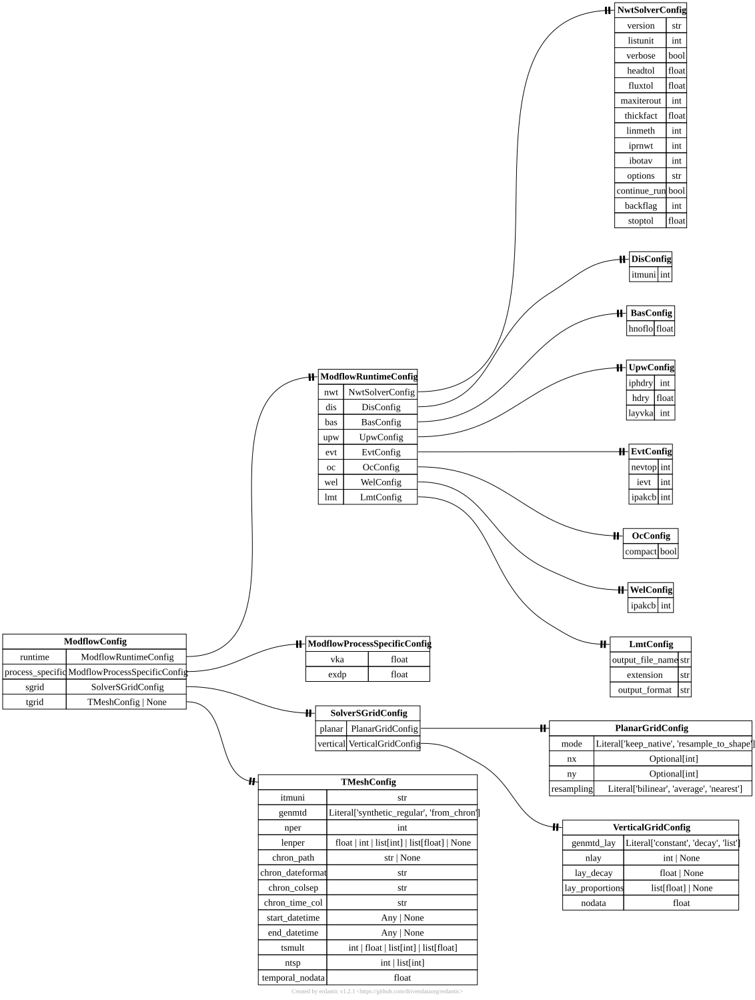

[modflownwt] ModflowConfig#
TOML section: [modflownwt]
Pydantic model: ModflowConfig defined in hydromodpy.solver.modflow_nwt.nwt.nwt_config.
Expert-level MODFLOW configuration organized by concern.
Fields#
runtime
in TOML:
[modflownwt.runtime]
ModflowRuntimeConfig factory expert source
MODFLOW runtime package options grouped by package.
process_specific
in TOML:
[modflownwt.process_specific]
ModflowProcessSpecificConfig factory expert source
Process-specific package controls (currently UPW/EVT knobs).
sgrid
in TOML:
[modflownwt.sgrid]
SolverSGridConfig factory user source
Spatial-grid payload split into […sgrid.planar] and […sgrid.vertical].
tgrid
in TOML:
[modflownwt.tgrid]
TMeshConfig | None default = None user source
Optional temporal discretization payload as one validated TMeshConfig model. In launcher mode, stress periods are driven by [simulation.time]; steady/transient policy is driven by [flow].flow_regime and [flow].first_period_steady.
Starter TOML snippet#
Cases using this section#
Validation gallery cases that reference fields from this section:
Entity-relationship diagram#
{kind=link}

Click to zoom and pan. Press Esc or click outside to close.